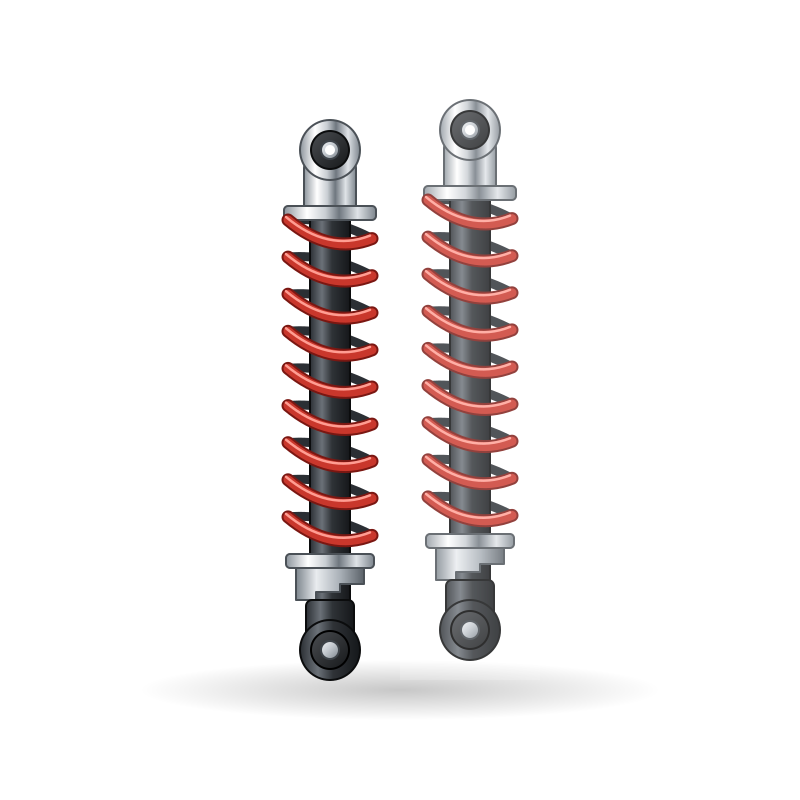
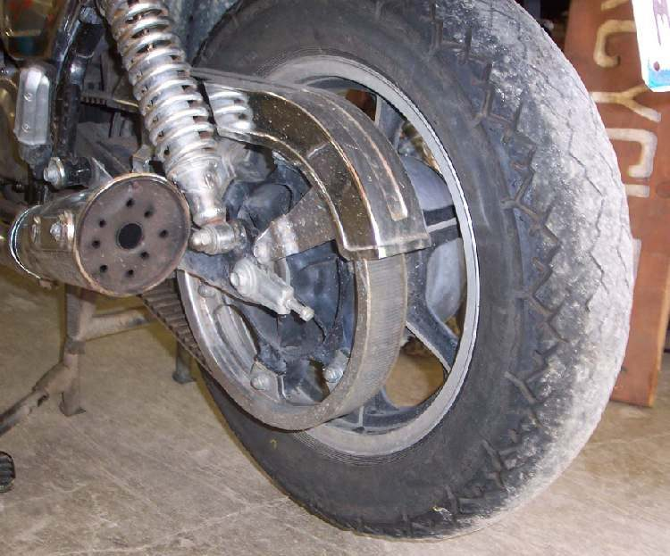

Spare parts / Triumph / Speed 400 / Rear shock absorber
Triumph Speed 400 rear shock absorber
Rear shock absorber for the Triumph Speed 400: when to replace it, what it costs, where to buy it and how to fit it.

IllustrationWorkshop photos


Where to buy
- Google ShoppingSearch results for this partgoogle.com ↗
- eBaySearch results for this partebay.com ↗
- AliExpressSearch results for this partaliexpress.com ↗
- AmazonSearch results for this partamazon.co.uk ↗
- EbaySearch results for this partebay.co.uk ↗
- SportsBikeShopAftermarket specialist: Parts and accessories, own affiliate programmesportsbikeshop.co.uk ↗
- WemotoAftermarket specialist: Commuter and scooter parts incl. Asian 125swemoto.com ↗
- CMSNLOEM parts (fiche): OEM exploded diagrams for Japanese brandscmsnl.com ↗
- BoodmoMarketplace (genuine + aftermarket): 400+ suppliersboodmo.com ↗
Check the part number for your model year before you buy. Genuine (OEM) parts first; good aftermarket parts are fine for wear items. Links open shop searches; Moto Zero earns nothing from them today and will say so here if that changes.
Fit it yourself
Fitment
| Model | Triumph Speed 400 |
| Type | Retro |
| Engine | 400 cc |
| Final drive | Chain |
| Brakes | Disc |
| Main markets | UK/IN |
Questions
How often should I replace the rear shock absorber on a Triumph Speed 400?
As a guide, 30,000-50,000 km or when leaking. The owner's manual for your model wins, and riding on dusty roads, with a passenger or with heavy loads shortens it.
How much does a Triumph Speed 400 rear shock absorber cost?
Typically US$ 25 to 400, depending on genuine or aftermarket and the shop. Prices are indicative.
Can I replace the rear shock absorber myself?
The job is rated 2 of 5 for difficulty. It is safety-critical: if you are not sure, have a mechanic check your work before you ride.
More parts for the Triumph Speed 400
 Illustration
Illustration Illustration
Illustration Illustration
Illustration Illustration
Illustration Illustration
Illustration Illustration
IllustrationAll parts for the Triumph Speed 400 → Rear shock absorber for other bikes →